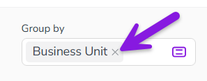

By default, the activity hierarchy in Uptempo Campaign Management displays all activities that you have access to, at all levels of the hierarchy. To make a large activity hierarchy easier to work with, you can use grouping to adjust how they are displayed.
You can group activities together based their selected value for a specified Drop-Down List or Multi-Select List attribute.
In the following example, the selected attribute is Target Persona. Activities are grouped according to their value for this attribute, such as Traveler. Activities to which no value is assigned for the selected attribute are shown grouped under the No value set grouping:
A grouping can only be applied to the activity types to which the attribute is assigned. If you see multiple levels of the activity hierarchy and the hierarchy contains multiple ancestors to whose descendant activities the grouping can be applied, then the descendants are displayed grouped under the respective ancestor.
Group activities by attribute
Click Group Activities. The Group by panel opens.
Use the menu in the Group by panel to select the attribute you want to group by:
To apply grouping using the selected attribute, click Apply.
The Filter by menu closes, and the activity hierarchy is grouped according to the selected attribute.
Stop grouping activities
Click Remove on the currently applied grouping attribute in the Group by field: 
The grouping attribute is removed from the Group by field, and the grouping is no longer applied to the activity hierarchy.

 Group Activities. The Group by panel opens.
Group Activities. The Group by panel opens.
{kind=link}